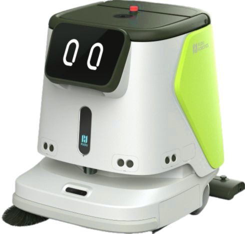
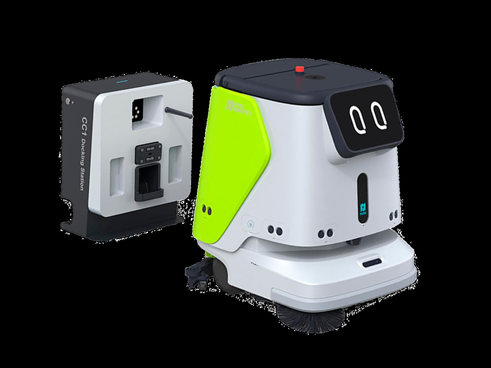

Muchas empresas siguen buscando una fregadora industrial o una
máquina fregadora industrial para limpiar sus instalaciones.
Sin embargo, hoy existen soluciones más avanzadas: los robots de limpieza industrial
y fregadoras autónomas, capaces de automatizar gran parte de esa operativa.
En Processap ayudamos a hoteles, supermercados, hospitales, edificios públicos e industria
a valorar si tiene más sentido seguir con una fregadora tradicional o dar el salto a una solución
autónoma como el PUDU CC1 capaz de abrir puertas o subir a un ascensor a limpiar el resto de plantas.

Una fregadora industrial tradicional sigue siendo una herramienta válida en muchos casos, pero mantiene una limitación clara: necesita un operario dedicado. Eso significa tiempo, coste de personal, coordinación y una limpieza que depende completamente de la disponibilidad del equipo.
En hoteles, supermercados, hospitales y grandes superficies, esto suele traducirse en una tarea repetitiva diaria que consume recursos y que no siempre aporta el mejor retorno operativo.
Si estás buscando una máquina fregadora industrial, probablemente tu objetivo real no sea la máquina en sí, sino mantener los suelos limpios con el menor coste operativo posible y con una calidad constante.
Ahí es donde entran los robots fregadora autónomos. En lugar de depender totalmente de un operario, automatizan la limpieza de suelos y permiten una operativa más moderna, previsible y eficiente.
En muchos entornos, la pregunta ya no es solo qué fregadora comprar, sino si tiene sentido seguir trabajando con una fregadora tradicional o pasar a una solución autónoma.

El PUDU CC1 es nuestra solución principal para empresas que buscan una alternativa real a la fregadora industrial tradicional. Está diseñado para automatizar la limpieza de suelos en hoteles, supermercados, hospitales, edificios públicos y grandes superficies.
Este robot combina barrido, fregado, aspirado y secado en una sola solución profesional. Su valor no está solo en limpiar, sino en hacerlo con mayor autonomía, menor dependencia de operario y una imagen mucho más avanzada para el negocio.
Si quieres conocer este modelo con más detalle, visita nuestra página específica del robot fregadora industrial PUDU CC1.
La diferencia principal no está solo en la máquina, sino en la forma de trabajar. Una fregadora industrial sigue necesitando conducción y dedicación completa. Un robot de limpieza industrial automatiza gran parte de esa rutina.
Si tu caso está más orientado a hospitality o retail, puedes ver también nuestra página sobre robots de limpieza para hoteles y supermercados.
Además del PUDU CC1, en Processap trabajamos otras soluciones como el MT1 para limpieza industrial más exigente y el SH1 para espacios más pequeños o medianos como bares, restaurantes y comercios.
Puedes ver la gama general en nuestra página de robots y soluciones PUDU.
Desde Málaga, en Processap ayudamos a empresas de Andalucía y del resto de España a valorar soluciones de limpieza profesional más avanzadas que una fregadora industrial tradicional.
Nuestro enfoque no es vender una máquina sin más, sino estudiar la operativa del cliente y proponer la solución que tenga más sentido en términos de uso, eficiencia y retorno.
Analizamos tu operativa y te orientamos sobre qué solución encaja mejor según tu espacio, frecuencia de limpieza y tipo de instalación.
📞 +34 647 507 220 · ✉️ admin@processap.com
Sede en Málaga · Servicio en toda España